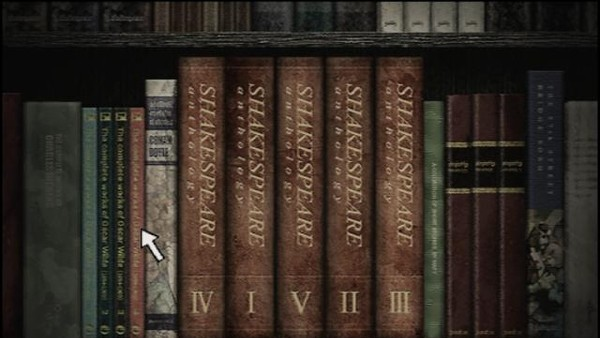

Silent Hill 3
Silent Hill 3 follows Heather, a teenager who becomes entangled in the machinations of the town's cult, which seeks to revive a malevolent deity.

Silent Hill 3 is a survival horror video game in which the player takes control of Heather, a teenager who awakens from a nightmare in a shopping mall and tries to return home to her father, while navigating environments that oscillate between reality and the Otherworld, a bloodier, supernatural version of it. Gameplay in Silent Hill 3 resembles closely that of its two predecessors, with gameplay set in the third-person view and divided among elements of combat, exploration, and puzzle-solving. The difficulty of both the combat and puzzle elements of the game can be set separately. In the case of the puzzle difficulties, there is a considerable difference between the "medium" difficulty level and the "hard" difficulty level; one of the puzzles on the "medium" level requires only simple pattern recognition, while the "hard" difficulty level version of the same puzzle requires knowledge of Shakespearean plays to complete.
To aid in exploration, Heather obtains a flashlight and radio early on, the latter of which crackles when monsters are in proximity. She can find "health" restoratives, such as first aid kits and energy drinks; beef jerky, used to lure monsters away from her path; and a range of firearms and melee weapons to fend off the monsters with. She can also block and perform side-step maneuvers to avoid enemies. Heather will also update any relevant maps of the area with notes on locked doors, inaccessible areas, and potential clues to puzzles. While the floor plans of the various environments largely remains consistent between reality and the Otherworld, certain areas may be rendered inaccessible in the Otherworld, with barriers or bottomless gulfs appearing in the street, for example. The game also features unlockable weapons and costumes.